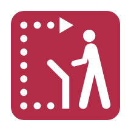

CONTENT
Decision Support
Decision support systems make complicated information and trade-offs understandable. They help define productive questions, design and analyze alternative courses of action, select options, and implement planning. Multiple comparisons, the right information for the problem, and accurately updated new information are key.
CONTENT
Local Impacts
Impacts are less immediate for most people when they are perceived to be far in the future, psychologically distant, uncertain, or happening to others. People are more likely to act and take risks seriously when the impacts are local and personal. Provide concrete steps that people can take to prepare for, minimize, or avoid local impacts altogether.
CONTENT
Metrics, Signals, & Indexes
Indexes, signals and metrics create clarity and focus by simplifying multiple sources of information. Their simplicity makes them easier to communicate, replicate, and retrieve from memory. As indicators, they can be tracked over time to show direction and trends, providing feedback on goals and benchmarking of group efforts.
CONTENT
Moral Foundations
Moral foundations are deeply held values that motivate people's ethical judgments, shape their intuitions, and affect the intensity of their emotional reactions. Care/Harm, Loyalty/Betrayal, Authority/Subversion, Fairness/Cheating, Sanctity/Degradation, and Liberty/Oppression are six dimensions that can be used to interpret and motivate communications and practices.
CONTENT

Prior Knowledge & Mental Models
People use their prior knowledge and experiences to construct internal images that help them predict how the world operates. Understanding how audiences use these mental models can be helpful for productively correcting myths and misinformation, communicating new concepts, or designing less painful products and services.
CONTENT
Sanctions & Conflict Resolution
Sanctions affirm core values and foster cooperation. They are more effective when levied by peers and coupled with access to rapid, low-cost conflict resolution mechanisms. Their severity should be proportional, scaling gradually with seriousness and context. Symbolic and meaningful sanctions broaden appeal among people from different cultural outlooks.
CONTENT
Scenarios & Alternative Futures
Vivid scenarios and alternative futures can help unearth group insights, resolve uncertainty, demonstrate consideration for the range of alternatives, and uncover solution paths. Transparency around the range of plausible futures and the options available can help build support, increase trust, and make trade-offs and decisions more concrete.
CONTENT
Solutions & Next Steps
Value helps people pursue their goals. Authenticity solves, makes incremental progress towards, and matches the scale of a problem. Fulfillment defines specific roles for individuals and local communities. Reliability is implemented and durable. Safety minimizes personal and local harm. Recourse corrects misconceptions about the solutions themselves.